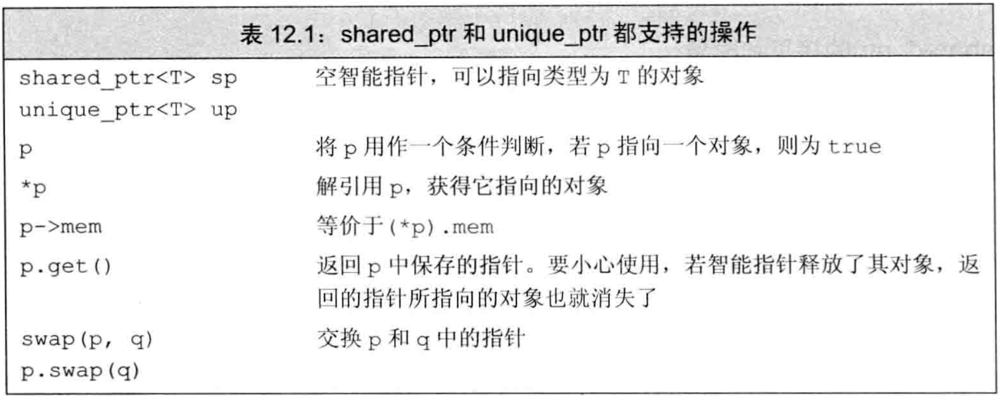
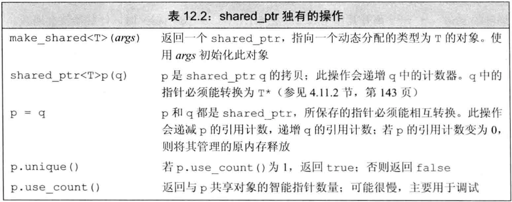
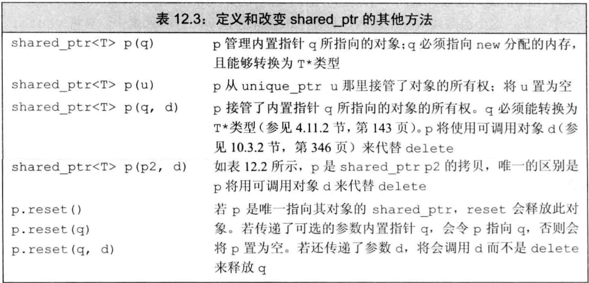
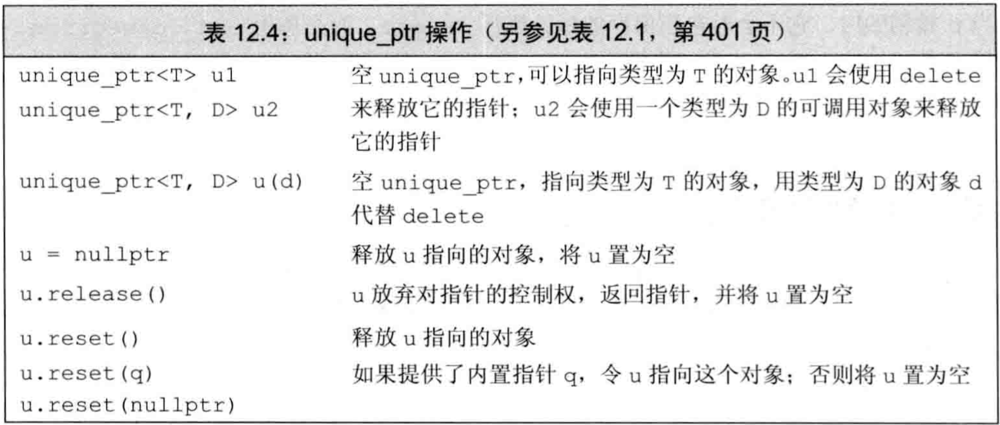
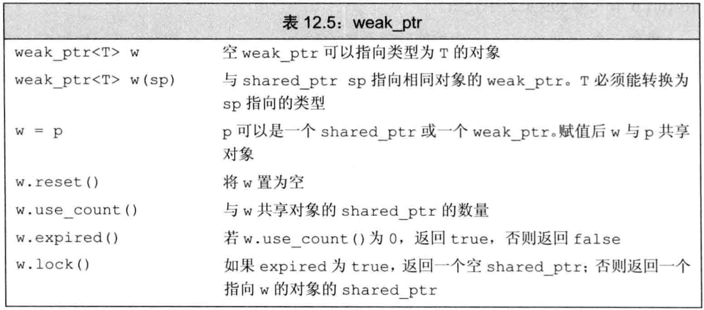
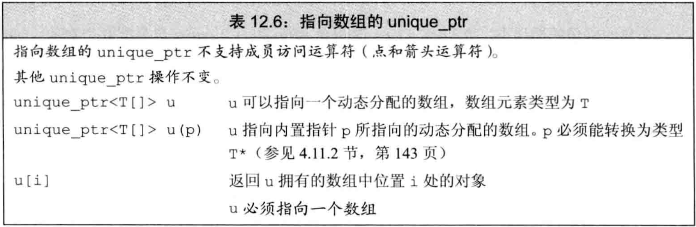
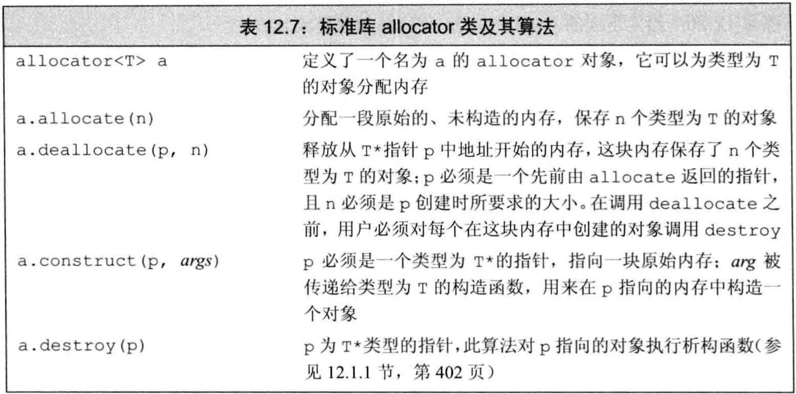
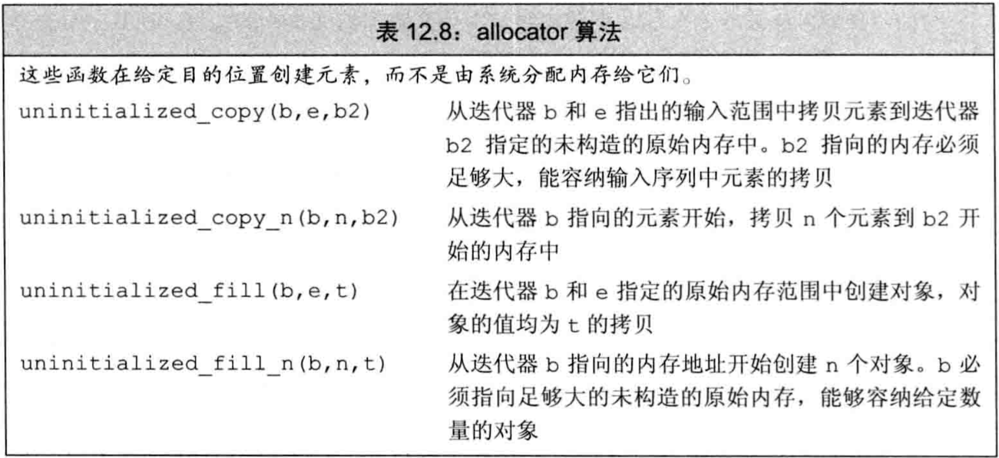

C++ primer 第12章 动态内存
文章目录
- 对象的
生存期：全局对象：程序启动时创建，程序结束时销毁局部static对象：第一次使用前创建，程序结束时销毁局部自动对象：定义时创建，离开定义所在程序块时销毁动态对象：生存期由程序控制，在显式创建时创建，显式销毁时销毁
- 动态对象的正确释放极易出错。为安全使用动态对象，标准库定义了
智能指针来管理动态对象 - 内存空间：
静态内存：局部static对象、类static数据成员、定义在任何函数之外的变量栈内存：定义在函数内的非static对象堆内存：动态对象，即运行时分配的对象
- 静态内存和栈内存中的对象由编译器创建和销毁，堆内存中的动态对象的生存期由程序控制
动态内存与智能指针
- C++通过一对
运算符管理动态内存：new算符在动态内存中为对象分配空间并返回指向该对象的指针，可选择对对象初始化delete算符接受一个动态对象的指针，销毁该对象并释放内存
- 确保在正确时间释放内存很难：
- 若不释放内存，导致
内存泄露 - 若还有指针指向该内存就将其释放，导致
指针空悬
- 若不释放内存，导致
- C++11标准库中提供了两种
智能指针来管理动态对象，定义于memory头文件：shared_ptr允许多个指针指向同一对象unique_ptr指针独占所指向对象weak_ptr是伴随类，是一种弱引用，指向shared_ptr管理的对象
shared_ptr类
- 智能指针也是模板类，创建时必须在模板参数中给定其指向的类型
- 默认初始化的智能指针中保存空指针，条件判断中使用智能指针是判断其是否为空
- 解引用智能指针返回其指向的对象
- shared_ptr和unique_ptr都支持的操作见表12.1，shared_ptr独有的操作见表12.2  
- 最安全的分配和使用动态内存的方法是调用
make_shared函数，该函数定义于memory头文件中，它在动态内存中分配一个对象并初始化，返回指向它的shared_ptr make_shared函数用法：- 是模板函数，使用时必须在模板参数中给出构造对象的类型
- 其参数必须与构造对象的构造函数参数匹配，使用这些参数构造对象
- 若不给实参，则对象值初始化
- 对shared_ptr进行拷贝/赋值时，每个shared_ptr会记录有多少个其他shared_ptr指向相同对象
- 每个
shared_ptr都有一个关联的计数器，称为引用计数：- 一个shared_ptr的一组拷贝之间共享“引用计数管理区域”，并用原子操作保证该区域中的引用计数被互斥地访问
- 互相独立的shared_ptr维护的引用计数也互相独立，即使指向同一对象。因此需避免互相独立的shared_ptr指向同一对象
- 改变
引用计数：递增：拷贝shared_ptr时，包括：用一个shared_ptr初始化另一个shared_ptr、作为参数传入函数、作为返回值从函数传出递减：给shared_ptr赋新值、shared_ptr被销毁（例如离开作用域）- 一旦shared_ptr的计数器变为0，会自动释放管理的对象
- C++标准并未要求使用计数器实现引用计数，其实现取决于标准库的实现
- 指向对象的最后一个shared_ptr被销毁时，shared_ptr会通过它的
析构函数完成对象的销毁 析构函数控制此类型对象销毁时的操作，一般用于释放对象的资源。shared_ptr类型的析构函数被调用时递减引用计数，一旦计数为0即销毁对象。- 例子：使用make_shared创建factory
|
|
- 必须确保shared_ptr在不使用时及时删除。例如容器中的shared_ptr在不使用时要erase
- 使用动态内存的
3种情况：- 不知道需要使用多少对象（容器）
- 不知道所需对象的准确类型（多态）
- 需在多个对象间共享数据
- 若两个对象共享底层数据，则某个对象被销毁时不可单方面销毁底层数据。此时应将共享的数据做成对象，在需共享它的两个类内分别用shared_ptr访问
- 例子：用shared_ptr实现共享资源
|
|
- 对类对象使用默认版本的拷贝/赋值/销毁操作时，这些操作拷贝/赋值/销毁类的数据成员（包括智能指针）。
直接管理内存
- 两个运算符分配/释放动态内存：
new分配内存，并构造对象delete销毁对象，并释放内存
- 使用new/delete管理动态内存的类不能依赖动态对象成员的拷贝/赋值/销毁的任何默认操作
- 堆内存中分配的空间是
匿名的，故new无法为其分配的对象命名，只能返回一个指向该对象的指针 - 动态对象
初始化：- 默认情况下用默认初始化：内置类型的值未定义，类类型依赖默认构造函数
- 直接初始化：用圆括号调用构造函数，或花括号列表初始化
- 值初始化：类型名后跟一对空的圆括号。对于有默认构造函数的类类型而言，值初始化没有意义（都是调用默认构造函数），但对于内置类型值初始化可有良好定义的值
- 拷贝初始化：使用圆括号里放单一对象，被分配的对象用它初始化。此时可用auto推导需分配的类型
- 例子：动态对象初始化
|
|
- 用new分配const对象是合法的，const对象必须初始化。
- 若new不能分配要求的空间，则抛出名为
bad_alloc的异常。 - 可向new算符传参来阻止抛出异常，传递了参数的new叫
定位new。 - 向new传入
std::nothrow，则它不会抛出异常。若不能分配内存，则返回空指针。 - bad_alloc和nothrow都定义在头文件
new中 - 例子：阻止new抛出异常
|
|
delete表达式将内存归还给系统，它接受一个指针，指向需要释放的对象- delete表达式执行两个工作：销毁指针指向的对象，释放对应的内存
- 传递给delete表达式的指针必须指向动态内存，或是空指针
- 用delete释放非new分配的内存，或者将同一指针释放多次，都是未定义
- 编译器无法知道一个指针是否指向动态内存，也无法知道一个指针指向的内存是否已被释放，故这些错误不会被编译器发现
- const对象的值不可改变，但可被销毁
- 内置指针管理的动态对象，在显式释放之前一直存在
- 内置类型的对象被销毁时什么都不会发生（与类类型不一样）。特别是，内置指针被销毁时不影响其指向的对象。若这个内置指针指向动态对象，则空间不会被释放
- 例子：内置指针销毁时不会销毁指向对象
|
|
- 用
new和delete管理动态内存的常见问题：- 忘记delete内存，没有指针指向该动态内存时，内存泄露
- 使用已释放的对象
- 同一块内存释放两次
- 用智能指针管理动态内存即可避免这些问题
- delete之后，指针变为
空悬指针，类似于未初始化的指针。为避免空悬指针，尽量在指针即将离开作用域时释放其管理的动态内存，也可在delete后立即将指针置为nullptr - delete内存后将指针置nullptr的做法只对单个指针有效，若还有其他指针指向该对象则它们变为空悬指针。由于很难知道有哪些指针指向这个对象，故很难用new和delete管理动态内存
- 例子：产生空悬指针
|
|
shared_ptr和new结合使用
- shared_ptr的操作如表12.3 
- 可用new返回的内置指针初始化智能指针，如果不对智能指针初始化，就被初始化为空指针
- 接受内置指针的智能指针构造函数是
explicit的，即不能将内置指针隐式转换为智能指针，必须直接初始化 - 例子：不能将内置指针隐式转换为智能指针
|
|
- 用于初始化智能指针的内置指针必须指向动态内存，因为智能指针默认使用delete释放其指向的对象。静态内存和栈内存不需要也不能使用智能指针
- shared_ptr用于自动管理对象释放的功能，只限于其自身的一组拷贝之间，
互相独立的shared_ptr其引用计数也互相独立，内置指针不参与引用计数。 - 推荐使用make_shared而不用new的内置指针初始化shared_ptr，因为make_shared可保证分配对象的同时和shared_ptr绑定，避免将一块内存绑定到多个互相独立的shared_ptr
- 例子：混合使用内置指针与智能指针
|
|
- 使用内置指针构造智能指针时必须立即构造，禁止混合使用两种指针，禁止传参时构造
- 将一个shared_ptr绑定到一个内置指针时，内存管理的责任被交给shared_ptr，不应该再用该内置指针访问内存
- shared_ptr定义了
get成员函数，它返回内置指针，指向shared_ptr管理的对象。用于不兼容shared_ptr的情形。 get使用风险：- 不可将get返回的内置指针dedete，因为原来的shared_ptr变为空悬
- 不可用get返回的内置指针来初始化另一个shared_ptr，因为产生两套引用计数
- 例子：不可用get返回的内置指针来初始化另一个shared_ptr
|
|
reset成员函数为shared_ptr赋予一个新的内置指针，同时更新原来的引用计数，必要时将原对象销毁。reset函数经常与unique函数一起使用，控制多个shared_ptr共享的对象。改变对象时检查自己是否是唯一的用户。若不是，可拷贝一份自己修改- 例子：非独有时拷贝再修改
|
|
智能指针和异常
- 使用了异常处理的程序可在异常发生时让程序继续，跳进异常中断时需确保异常发生后资源被正确释放。例如new分配的对象，处理异常时要考虑delete
- 若使用智能指针，即使程序员因异常而过早结束，智能指针也可确保在指针离开作用域时释放资源
- 函数的退出有两种可能：正常处理结束或发生异常。两种情况下局部非static对象都会被销毁（包括智能指针，因此可使动态对象也被自动销毁）
- 若使用new/delete管理内存，且在new和delete之间发生异常，则内存不会被释放
- 例子：new/delete分配的内存遇到异常时可能不会释放
|
|
- C++的很多类都定义了析构函数用于销毁对象释放资源。但不是所有的类都有，尤其是与C交互的类，通常要求用户显式释放使用的任何资源。若在资源的分配和释放之间发生了异常，也会有资源泄露。可用智能指针管理这些未定义析构函数的类，只需
自定义delete操作。 - 默认情况下，shared_ptr假定它们指向的是动态内存，即销毁时对其管理的指针进行delete。这个delete也可自定义。
- 创建shared_ptr时可在参数列表中给出自定义的delete函数，该delete函数的必须接受一个指向所管理对象的内置指针
- 例子：自定义shared_ptr的delete
|
|
- 智能指针使用
基本规范：- 不使用相同的内置指针来初始化（或reset）多个智能指针
- 不delete get()返回的指针
- 不使用get()初始化或reset另一个智能指针
- 谨慎使用get()返回的指针，最后一个智能指针销毁后对象就被销毁了
- 若使用智能指针管理的资源不是new分配的内存，要自定义delete
unique_ptr
- 同一个时刻只能有一个unique_ptr指向给定对象。若unique_ptr被销毁，其指向的对象也被销毁
- unique_ptr的操作列于表12.4 
- 定义unique_ptr时需将其绑定到一个new返回的指针上。类似shared_ptr，用内置指针初始化时必须显式构造，不可隐式转换
- unique_ptr不支持拷贝/赋值，因为独占其管理的对象
- 例子：unique_ptr不支持拷贝/赋值
|
|
- 可通过release/reset成员函数将指针所有权从一个（非const）unique_ptr转移给另一个unique_ptr
release函数返回unique_ptr当前保存的指针，并将unique_ptr置为空reset函数将unique_ptr原来指向的对象被释放，并接受一个可选的内置指针参数，令unique_ptr重新指向给定的指针。
- 例子：unique_ptr用release/reset转移权限
|
|
- 不能拷贝unique_ptr的规则有一个例外：可以拷贝或赋值一个将要被编译器销毁的unique_ptr，这时编译器执行一种特殊的拷贝（
移动）。例如可从函数中返回unique_ptr，也可返回局部unique_ptr对象的拷贝 - 例子：可拷贝将要被编译器销毁的unique_ptr
|
|
- 早期的标准库中有一个名为
auto_ptr的类，它具有unique_ptr的部分特性，但不完整。特别是，不能在容器中保存auto_ptr，也不能从函数中返回auto_ptr。auto_ptr在标准库中仍存在，但应避免使用，应使用unique_ptr - unique_ptr默认用
delete释放它指向的对象，也可自定义delete，但unique_ptr管理删除器的方式和shared_ptr不同 - 重载unique_ptr的删除器会影响到unique_ptr类型以及如何构造（或reset）unique_ptr对象。因此必须在unique_ptr的模板参数中提供删除器函数的指针类型，构造或reset时需提供删除器。
- 例子：自定义unique_ptr的delete
|
|
weak_ptr
weak_ptr是一种不控制指向对象生存期的智能指针，它指向一个由shared_ptr管理的对象。- 将weak_ptr绑定到shared_ptr指向的对象时，不会改变shared_ptr的引用计数，一旦该对象的shared_ptr引用计数清零，对象就会被释放，即使有weak_ptr指向它。
- weak的用法如表12.5 
- 创建weak_ptr时要在模板参数中给出指向对象类型，并用shared_ptr来初始化。模板参数中的类型只需能转换为shared_ptr指向的类型即可，不需严格匹配
- 由于weak_ptr的对象可能不存在，故不能用weak_ptr直接访问对象，而必须用
lock成员函数。lock函数先检查指向对象是否存在，若存在则返回指向该对象的shared_ptr（与初始化weak_ptr的shared_ptr共享引用计数），不存在则返回空的shared_ptr - 例子：利用weak_ptr定义伴随指针类（类似迭代器），使用时不干涉底层对象的生存期，但在底层对象不存在时可阻止访问
|
|
动态数组
- new/delete一次只分配/释放一个对象，但有时需要一次为很多元素分配内存，如容器扩张时
- 两种一次性分配一个
动态数组的功能：- C++语言提供：另一种
new表达式，可分配并初始化一个动态数组 - 标准库提供：
allocator类，可分配多个元素的内存，并将分配和初始化分离，性能更好更灵活
- C++语言提供：另一种
- 最佳实践：应优先使用容器而不是动态数组来管理可变数量的对象
- 使用容器的类可用默认版本的拷贝/赋值/析构来处理容器，而分配动态数组的类必须自定义拷贝/赋值/析构操作来处理动态数组
new和数组
- 使用new分配动态数组，要在类型名后跟一对方括号
[]，并在方括号中指明要分配对象的数目 - 可用表示数组的类型别名来分配动态数组
- 例子：分配动态数组
|
|
- new分配动态数组时，并未得到数组类型的对象，而是返回指向该数组的指针。
- 由于new返回的不是数组类型，故不能对动态数组使用begin和end，也不能用范围for
- new动态数组的
初始化：- 默认情况下new分配的对象（单个或数组）都是
默认初始化 - 可用花括号对动态数组做
列表初始化。若列表过短则剩下的值初始化，列表过长则分配失败并抛出异常bad_array_new_length（定义于头文件new） - 可用空的圆括号对动态数组做
值初始化，括号内不能有值。不能用auto分配动态数组
- 默认情况下new分配的对象（单个或数组）都是
- 例子：new动态数组的初始化
|
|
- 用new分配大小为0的数组时，new返回一个合法的非空的指针，并保证该指针与new返回的任何其他指针都不同。对于长为0的数组，该指针类似尾后迭代器。
- 释放动态数组时可用特殊形式的delete，在指针前加空的方括号
[] - 动态数组中的元素按
逆序销毁，即从最后一个元素开始 - 若在delete动态数组时忽略了
[]，或在delete单个对象时使用了[]，其行为都是未定义 - 即使在new时使用类型别名导致new中没有
[]，也要在delete中写[] - 例子：销毁动态数组
|
|
unique_ptr可管理new分配的动态数组，只需在模板参数中指定类型为数组即可。unique_ptr销毁动态数组的方式是使用delete []- 例子：unique_ptr管理动态数组
|
|
- 指向数组的unique_ptr操作如表12.6： 
- unique_ptr指向动态数组时，不可使用点
.和箭头->算符，因为指向的是数组而不是单个对象 - unique_ptr指向动态数组时，可用下标
[]访问元素 - 若要使用shared_ptr管理动态数组，需提供
自定义delete - shared_ptr未定义下标算符，且智能指针都不支持指针算数运算。故shared_ptr访问数组中元素时必须用get函数取出内置指针
- 例子：shared_ptr管理动态数组
|
|
allocator类
- new/delete在灵活性上的局限：将内存分配和对象构造组合在一起，将对象析构和内存释放组合在一起
- 分配一大块内存时，通常要按需构造对象。此时希望将内存分配和对象构造分离，只在真正需要时才构造对象
- new的局限性：
- 分配空间时即构造对象，初始化之后再赋予新值，则每个元素被赋值两次
- 分配空间被对象填满，可能创建了一些永远不会使用的对象
- 没有默认构造函数的类不能用new分配动态数组
allocator类定义在memory头文件中，提供一种类型感知的内存分配，分配的内存是原始的、未构造的。它可将内存分配和对象构造分离，将对象销毁和内存释放分离。- allocator支持的操作见表12.7 
- allocator也是模板类，需在模板参数中给出分配的对象类型。分配内存时根据给定的类型来确定恰当的内存大小和对齐位置
allocate成员函数接受一个参数，指定分配能容纳多少个该对象的内存construct成员函数接受一个指针和额外参数，在指针所指位置构造一个元素，额外参数匹配到元素的构造函数- 为使用allocate分配的内存，必须用construct构造对象。使用未构造的内存是未定义
- 早期的标准库construct只接受两个参数，一个指针和一个元素类型的值，只能把给定值拷贝进内存
- 使用完对象后必须对每个对象调用
destroy来销毁，该成员函数接受一个指针，执行所指元素的析构函数 - 只能对真正构造了的元素进行destroy操作，对未构造的空间进行destroy是未定义
- 使用destroy销毁元素后可以再构造元素，也可将内存还给系统
- 使用
deallocate成员函数释放内存，它接受两个参数，一个指向这块内存的指针和一个销毁元素的数量，该数量必须与allocate分配的数量相同（即只能全部释放）。 - 例子：使用allocator
|
|
- 标准库为allocator类定义了两个
伴随算法，用于在未初始化的内存中创建对象，它们定义于memory头文件中 - allocator的伴随算法见表12.8 
- uninitialized_copy类似copy，接受3个迭代器参数，前两个表示输入序列，第三个表示目的位置。目的位置必须是未构造的内存。该函数在目的位置构造元素，并返回已构造序列的尾后迭代器
- uninitialized_fill_n类似fill_n，接受一个指向目的位置的指针、一个计数、一个值。该函数在目的位置创建给定个数目的对象，用给定值初始化
- 例子：使用allocator的伴随算法
|
|
使用标准库：文本查询程序
- 例子：查询单词在文件中出现的次数及行号，可打印所有行的内容 //输入示例： 本章英文版 //输出示例：（假如要查询单词element） element occurs 112 times: (line 36) A set element contains only a key; (line 158) operator creates a new element (line 160) Regardless of whether the element (line 168) When we fetch an element from a map, we (line 214) If the element is not found, find returns
文本查询程序设计
- 开始程序设计的一种好方法是列出程序的操作，这会帮助分析需要什么数据结构
vector<string>来保存整个输入文件的一份拷贝，用行号作为下标索引一行istringstream将每行分解为单词set保存单词出现的行号，保证行号不重复且升序保存map将每个单词与其行号set关联- 用一个类保存和查询，另一个类保存查询结果。用
shared_ptr在它们之间共享文本数据和行号集合
- 自顶向下：设计一个类时，在真正实现成员之前先编写程序使用这个类
- 使用TextQuery类
|
|
文本查询程序类的定义
- TextQuery类
|
|
- QueryResult类
|
|
- query成员函数
|
|
- 打印结果
|
|
- 封装：将上述定义按顺序放入文件中，并将runQueries放在最后，并添加头文件和头文件保护，封装为hpp：
|
|
- 测试：建立cpp文件，包含上述头文件
|
|